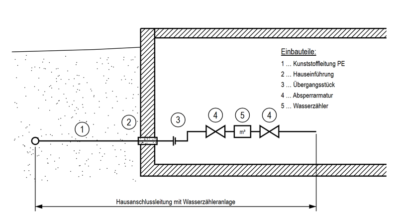
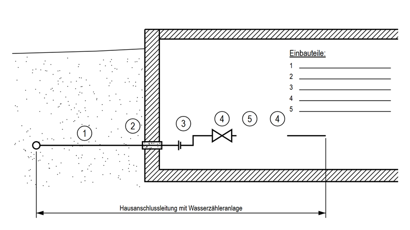

Sinnbilder, Hausanschluss
Heute lernst du: was ein Sinnbild ist, welche Sinnbilder die wichtigsten Armaturen haben und wie das Wasser von der Straße ins Haus kommt.
So arbeitest du: Lies zuerst den grauen Infokasten. Mach dann die Aufgaben darunter. Fertig? Tippe bei jeder Aufgabe auf „Prüfen“. Bessere deine Fehler aus.
Die Kästen mit Strichellinie und ★★★ („Mehr wissen“ und „Vertiefung“) sind erweiterte Aufgabenstellungen.
Infokasten A: Wie zeichnet man ein Bauteil im Plan? (Sinnbild)
|
Im Plan zeichnet man kein Foto, sondern ein Sinnbild. Ein Sinnbild ist eine einfache Zeichnung. Es zeigt, wofür ein Bauteil da ist. Wie das Bauteil genau ausschaut, ist egal. Die Sinnbilder stehen in der Norm (ÖNORM). So versteht jeder Installateur jeden Plan.
Die Leitung geht links und rechts in das Sinnbild hinein. Merke: Ein Sinnbild zeigt, wofür ein Bauteil da ist, nicht wie es ausschaut. |
Aufgabe 1 ★ leicht
Lies Infokasten A. Stimmt der Satz? Kreuze an: richtig (R) oder falsch (F).
| Satz | R | F |
|---|---|---|
| a) Ein Sinnbild ist ein Foto vom Bauteil. | ||
| b) Ein Sinnbild zeigt, wofür das Bauteil da ist. | ||
| c) Bei der Absperrarmatur zeigen die Spitzen der Dreiecke zueinander. | ||
| d) Ein Sinnbild zeigt genau, wie das Bauteil ausschaut. |
Infokasten B: Womit sperrt man eine Leitung ab? (Absperrarmaturen)
|
Eine Armatur ist ein Bauteil in der Leitung, z. B. zum Absperren, Regeln oder Messen. Mit einer Absperrarmatur kann man das Wasser abdrehen. Alle haben die Grundform mit den zwei Dreiecken. Ein kleines Zeichen in der Mitte sagt, welche Armatur es ist. Die Spindel ist die Stange, die man beim Auf- und Zudrehen dreht.
Merke: Strich = Schieber. Kreis = Kugelhahn. Schräge Spindel = Schrägsitzventil. |
Aufgabe 4 ★★ mittel
Lies Infokasten B. Woran erkennst du die Armatur im Sinnbild? Schreib den Satz fertig.
| a) Beim Kugelhahn ist in der Mitte | |
| b) Beim Schieber ist in der Mitte | |
| c) Beim Schrägsitzventil ist in der Mitte |
Aufgabe 5 ★★ mittel – Welche Armatur ist das?
Schau nicht in den Infokasten. Probier es zuerst aus dem Kopf. Welche Armatur ist auf dem Foto? Schreib den Namen dazu. Kontrollier erst danach mit Infokasten B.
| A | B | C |
|---|---|---|
Infokasten C: Messen, schützen, regeln (Armaturen beim Wasserzähler)
Merke: Großer gefüllter Punkt = Rückflussverhinderer. Rechteck mit m³ = Wasserzähler. |
Aufgabe 7 ★★ mittel
Lies Infokasten C. Was macht das Bauteil? Schreib den Satz fertig.
| a) Der Wasserzähler | |
| b) Der Rückflussverhinderer | |
| c) Der Druckminderer |
Aufgabe 8 ★★ mittel – Welches Bauteil ist das?
Schau nicht in den Infokasten. Welches Bauteil ist auf dem Foto? Schreib den Namen dazu. Kontrollier erst danach mit Infokasten C.
| A | B | C |
|---|---|---|
Infokasten D: Wie kommt das Wasser ins Haus? (Hausanschluss)
|
• In der Straße liegt die Versorgungsleitung vom Wasserwerk. • An der Versorgungsleitung sitzt die Anbohrschelle: Sie wird um die Versorgungsleitung gelegt, dann bohrt man die Leitung an. Sie hat eine Absperrung. Hier beginnt die Anschlussleitung zum Haus. • Die Anschlussleitung ist meistens aus Kunststoff (PE): Sie rostet nicht, ist leicht und einfach zu verbinden. • Die Hauseinführung führt die Leitung dicht durch die Kellerwand. Es darf keine Feuchtigkeit ins Haus kommen. • Das Übergangsstück verbindet das PE-Rohr mit dem Metallrohr im Haus. • Dann kommt die Wasserzähleranlage: Absperrarmatur vor dem Wasserzähler, Wasserzähler, Absperrarmatur nach dem Wasserzähler. Mit den zwei Absperrarmaturen kann man den Wasserzähler tauschen, ohne dass viel Wasser ausläuft. • Die Anschlussleitung geht von der Anbohrschelle bis einschließlich (= mit dabei) der Wasserzähleranlage.  Merke: Versorgungsleitung → Anbohrschelle → PE-Leitung → Hauseinführung → Übergangsstück → Absperrarmatur → Wasserzähler → Absperrarmatur |
Aufgabe 9 ★ / ★★ – Der Hausanschluss
a) ★ Schau dir das Bild an. Schreib zu jeder Nummer das Bauteil in die Tabelle.
Diese Wörter helfen dir: Wasserzähler – Übergangsstück – Absperrarmatur – Kunststoffleitung PE – Hauseinführung
| Nr. | Bauteil |
|---|---|
| 1 | |
| 2 | |
| 3 | |
| 4 | |
| 5 |

Aufgabe 10 ★★ mittel – Reihenfolge
Lies Infokasten D. In welcher Reihenfolge kommt das Wasser zu den Bauteilen? Schreib 1 bis 8 ins Kästchen.
| Bauteil | Nr. |
|---|---|
| Wasserzähler | |
| Absperrarmatur nach dem Wasserzähler | |
| Versorgungsleitung in der Straße | |
| Hauseinführung | |
| Absperrarmatur vor dem Wasserzähler | |
| Anbohrschelle | |
| Übergangsstück | |
| Kunststoffleitung PE |
Aufgabe 11 ★★ mittel
Lies Infokasten D. Schreib den Satz fertig.
a) Die Anschlussleitung ist meistens aus PE, weil
b) Die Hauseinführung muss dicht sein, weil
c) Vor und nach dem Wasserzähler ist eine Absperrarmatur, damit
Aufgabe 14 ★★ mittel – Fachbegriffe
Fachbegriffe sind die Wörter, die man auf der Baustelle verwendet.
Steht der Fachbegriff da? Dann erkläre ihn mit eigenen Worten.
Steht die Erklärung da? Dann schreib den Fachbegriff dazu.
Diese Fachbegriffe gibt es: Versorgungsleitung – Meterriss – Druckminderer – Übergangsstück – Gefälle – Anschlussleitung – Wasserzähler
Achtung: 2 Wörter bleiben übrig. Tipp: Lies die Infokästen A bis D.
| Fachbegriff | Erklärung |
|---|---|
| Sinnbild | |
| Misst, wie viel Wasser durchfließt. | |
| Absperrarmatur | |
| Macht den Wasserdruck im Haus kleiner. | |
| Rückflussverhinderer | |
| Leitung vom Wasserwerk, liegt in der Straße. | |
| Hauseinführung | |
| Verbindet das PE-Rohr mit dem Metallrohr. | |
| Anbohrschelle | |
| Leitung von der Anbohrschelle bis einschließlich Wasserzähler. |
Aufgabe 15 ★★★ schwer – Fachbegriffe auf Englisch
Wie heißt der Fachbegriff auf Englisch? Schreib das englische Wort in die Tabelle.
Diese Wörter gibt es: water meter – radiator – ball valve – symbol – gate valve – check valve – pressure – tap – basement – pressure reducer – pipe – wall
Achtung: 2 Wörter bleiben übrig.
| Deutsch | Englisch | Deutsch | Englisch |
|---|---|---|---|
| Wasserzähler | Sinnbild | ||
| Kugelhahn | Druck | ||
| Schieber | Keller | ||
| Rückflussverhinderer | Rohr | ||
| Druckminderer | Wand |
Fertig? Tippe bei jeder Aufgabe auf „Prüfen“. Bessere deine Fehler aus.